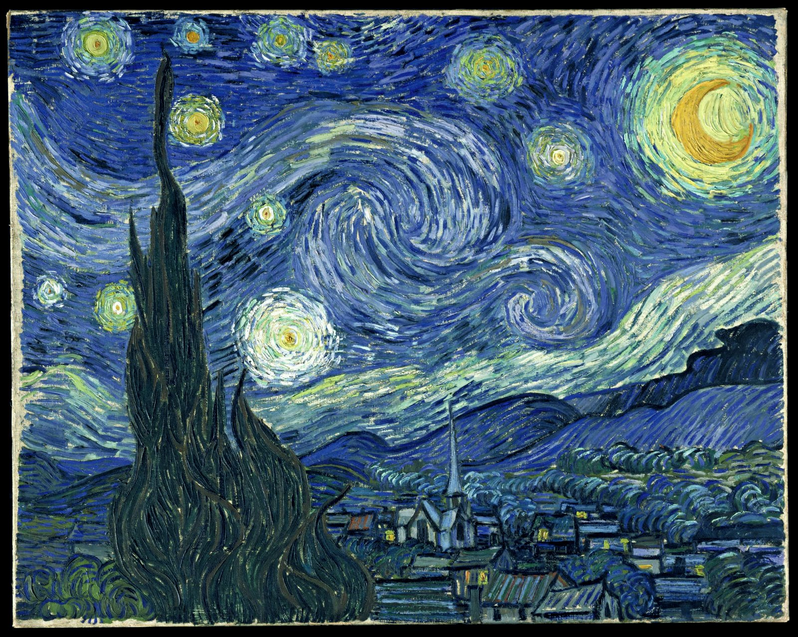

Modelos de color HSL y HSV con Transferencia de Estilo Arbitraria
Estos modelos de color son utilizados en vision por computador y análisis de imagen para realizar detección de características, o segmentación de imágenes.
Entre las aplicaciones de estas herramientas se encuentran:
- Detección de objetos
- Reconocimiento de objetos
- Recuperación de imágenes basada en contenido
- Análisis de imágenes médicas
HSV
El modelo HSV (del inglés Hue, Saturation, Value – Matiz, Saturación, Valor), también llamado HSB (Hue, Saturation, Brightness – Matiz, Saturación, Brillo), define un modelo de color en términos de sus componentes. Fue creado en 1978 por Alvy Ray Smith. Se trata de una transformación no lineal del espacio de color RGB, y se puede usar en progresiones de color. Nótese que HSV es lo mismo que HSB pero no que HSL o HSI. Se representa como un grado de ángulo cuyos valores posibles van de 0 a 360° (aunque para algunas aplicaciones se normalizan del 0 al 100%). Cada valor corresponde a un color. Ejemplos: 0 es rojo, 60 es amarillo y 120 es verde.

HSL
El modelo HSL(del inglés Hue, Saturation, Lightness – Matiz, Saturación, Luminosidad), también llamado HSI (del inglés Hue, Saturation, Intensity – Matiz, Saturación, Intensidad), define un modelo de color en términos de sus componentes constituyentes. El modelo HSL se representa gráficamente como un cono doble o un doble hexágono. Los dos vértices en el modelo HSL se corresponden con el blanco y el negro, el ángulo se corresponde con el matiz, la distancia al eje con la saturación y la distancia al eje blanco-negro se corresponde a la luminancia. Como los modelos HSI y el HSV, es una deformación no lineal del espacio de color RGB. Nótese que HSL es lo mismo que HSI pero no que HSV o HSB.

Transferencia de estilo
La transferencia de estilo neuronal (NST) se refiere a una clase de algoritmos de software que manipulan imágenes digitales, o vídeos, con el fin de adoptar la apariencia o el estilo visual de otra imagen. Los algoritmos NST se caracterizan por utilizar redes neuronales profundas para la transformación de imágenes. Los usos más comunes de la NST son la creación de obras de arte artificiales a partir de fotografías, por ejemplo, transfiriendo la apariencia de cuadros famosos a fotografías suministradas por el usuario. Varias aplicaciones móviles notables utilizan técnicas de NST con este fin, como DeepArt y Prisma. Este método ha sido utilizado por artistas y diseñadores de todo el mundo para desarrollar nuevas obras de arte basadas en estilos existentes.

Resultados de la aplicación
El objetivo del ejercicio es visualizar los diferentes modelos de color HSL, HSV y Luma en una imagen generada por un modelo de transferencia de estilo.
El usuario puede seleccionar ambas imagenes y al hacer click en el botón aplicar estilo, se generará la imagen, la cual podrá ser visualizada en el sketch de abajo en los diferentes modelos de color y en escala de grises para realzar la diferencia.
Imagen Objetivo:
Estilo a aplicar:
